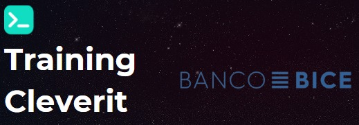

Design By
Team DevOps GitHub
&
CleverIT
# Training BICE - [Cultura DevOps](culturaDevOps.html) - [GitHub Knowledge](./githubKnow.html) - [Git & Github](git-github.html) - [Hand-ON](#elemento-4)
 --- ## ¿Qué es DevOps? - **DevOps** es una cultura que busca la colaboración y comunicación entre los equipos de desarrollo (Dev) y operaciones (Ops). - Su objetivo es mejorar la eficiencia, velocidad y calidad en la entrega de software. --- # Principios DevOps - **Colaboración:** Integración estrecha entre Dev y Ops. - **Automatización:** Agiliza procesos para una entrega continua. - **Monitoreo:** Retroalimentación constante para mejoras continuas. --- <!-- Diapositiva vertical --> <section data-orientation="vertical"> Beneficios de DevOps - Entrega Rápida:** Ciclos de desarrollo más cortos. - Mejora de la Calidad:** Pruebas automáticas y despliegues controlados. - Mayor Colaboración:** Equipos trabajan juntos en lugar de silos. </section> <!-- Diapositiva vertical --> <section data-orientation="vertical"> Herramientas de DevOps - CI/CD: Github - Actions, Travis CI. - Automatización:** Ansible, Puppet. - Contenedores:** Docker, Kubernetes. </section> <!-- Diapositiva vertical --> <section data-orientation="vertical"> Practicas comunes Integración continua (CI) Entrega continua (CD) Monitoreo continuo Seguridad continua </section> --- ## Desafíos Comunes 1. **Cambio Cultural:** Romper barreras tradicionales. 2. **Seguridad:** Integrar seguridad desde el principio. 3. **Herramientas Adecuadas:** Seleccionar las herramientas correctas para tu entorno. --- ## Marco DevOps 
 --- ## Servicios - **Infraestructura como código:** - Gestionar la infraestructura de forma programática, lo que puede ayudar a reducir errores y mejorar la consistencia - **Integración continua (CI):** - Permite a los equipos de desarrollo y operaciones automatizar el proceso de construcción --- ## Servicios - **Pruebas Automatizadas** - **Despliegue Continio (CD)** - **Gestion de la Liberacion** - **Monitorización del funcionamiento de la aplicación** - Son fundamentales para garantizar el rendimiento y la disponibilidad del software. - **DevSecOps** --- # ¿ Que es IaC ? - Beneficios de la IaC - Reducción de costes - Mejora de la seguridad - Aumento de la agilidad - Frameworks - AWS CloudFormation - Terraform - Ansible --- ## CI - Beneficios de la IaC - Diferencias entre las herramientas de CI - Herramientas de CI --- ## CI / CD Github - Ventajas - Es una herramienta gratuita y de código abierto. - Es una herramienta muy flexible y personalizable. - Es una herramienta madura y bien documentada. - Es una herramienta más y más plantillas desarrolladas por las grandes empresas y la comunidad.
 ---  --- # Monitoreo y Observabilidad - **¿ Que es monitoreo?** - **Niveles de monitoreo** - Infraestructura - Aplicaciones - usuarios - **Beneficios** - Mejora de la disponibilidad - mejora del rendimiento - mejora de la seguridad - Herramienta de Monitoreo --- # DevSecOps - **Seguridad de la cadena de suministro** - Snyk - WhiteSource - SonarSource - **Seguridad de la infraestructura** - Amazon Web Services Inspector - Azure Security Center - Google Cloud Platform Security Command Center --- ## DevSecOps - **Seguridad de las aplicaciones** - OWASP ZAP - Burp Suite - Cypress - **Seguridad de los datos** - Datadog Security - Splunk Security Analytics - Datadog --- --- ## Recomendaciones 1. **Involucrar a Todas las Partes:** Desde el desarrollo hasta las operaciones. 2. **Automatizar en Pequeños Pasos:** Progresión gradual para evitar problemas. 3. **Medir y Mejorar Constantemente:** Utilizar métricas para evaluar el rendimiento. --- ## Conclusiones - **DevOps es un Viaje:** No es solo una meta, sino un proceso continuo. - **Cambio Cultural:** Más que tecnología, es una transformación en la forma de trabajar. --- ## Preguntas ¡Gracias por su atención! ¿Alguna pregunta? --- # Training BICE - [Cultura DevOps](culturaDevOps.html) - [GitHub Knowledge](./githubKnow.html) - [Git & Github](git-github.html) - [Hand-ON](#elemento-4)